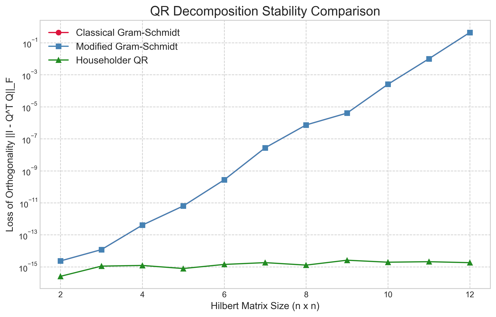
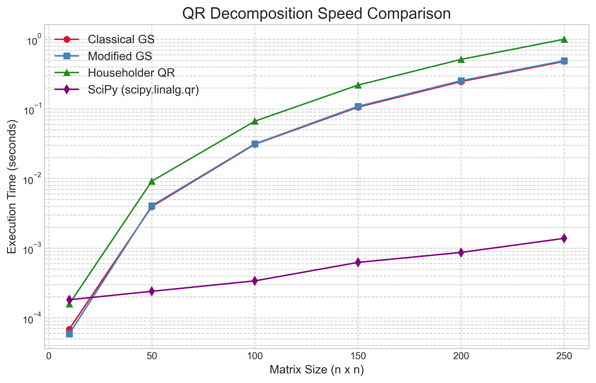
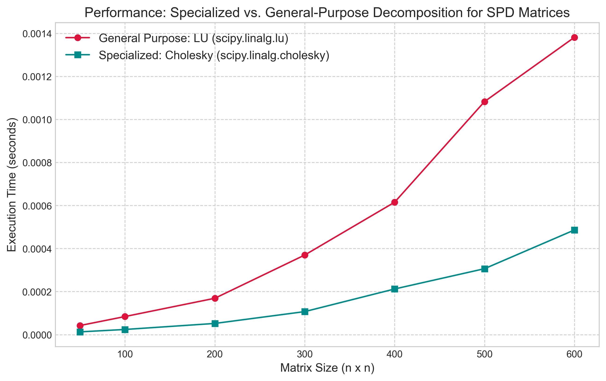

In our first article, we established the foundations of computational cost and developed a robust algorithm, the PLU decomposition, for solving general systems of linear equations. While PLU factorization is a powerful and versatile tool, the world of matrix computation is rich with alternative factorizations, each designed to excel under specific conditions. Not all problems require a general-purpose solver; often, superior performance and numerical stability can be achieved by leveraging the unique properties of a given matrix or problem.
This article explores two such crucial decompositions: the QR and the Cholesky factorizations. We will first delve into the concept of orthogonality, a geometric property with profound implications for numerical stability. We will begin by constructing the QR decomposition through the intuitive Gram-Schmidt process, only to discover its potential fragility in the face of finite-precision arithmetic. This will motivate our exploration of more robust methods, such as the Householder reflections, which form the backbone of professional-grade QR algorithms.
Next, we will turn our attention to a special class of matrices that appear frequently in optimization and statistics: symmetric positive-definite (SPD) matrices. For these well-behaved matrices, we can employ the Cholesky decomposition, a remarkably efficient and stable factorization that is often described as the matrix equivalent of a square root. By implementing these algorithms from scratch, we will gain a deeper appreciation for the trade-offs between generality, efficiency, and the critical pursuit of numerical stability in modern matrix computation.
The QR Decomposition: The Power of Orthogonality
While the LU decomposition is centered on Gaussian elimination, the QR decomposition is built upon the geometric concept of orthogonality. An orthogonal matrix, denoted by $Q$, is a square matrix whose columns are mutually orthonormal. This means each column vector has a Euclidean norm (length) of 1, and the dot product of any two distinct column vectors is zero. This property leads to a remarkable consequence: the inverse of an orthogonal matrix is simply its transpose ($Q^{-1} = Q^T$), which makes inversion a computationally trivial operation.
The numerical stability of orthogonal matrices is their most important attribute. When we multiply a vector or another matrix by $Q$, vector norms and the angles between vectors are preserved. This means that unlike some other transformations, orthogonal transformations do not amplify rounding errors, which is a highly desirable feature in finite-precision computations.
The QR decomposition leverages this property by factorizing an arbitrary $m \times n$ matrix $A$ into the product $A = QR$, where $Q$ is an $m \times m$ orthogonal matrix and $R$ is an $m \times n$ upper triangular matrix. Our first approach to computing this factorization is the Gram-Schmidt process.
The Classical Gram-Schmidt Process
The Gram-Schmidt process is an intuitive algorithm for producing an orthonormal basis from a set of linearly independent vectors, such as the columns of a matrix $A$. The procedure works sequentially. It takes the first column of $A$, normalizes it to have unit length, and makes this the first column of $Q$. Then, for each subsequent column of $A$, it subtracts the components that lie in the direction of the previously computed columns of $Q$. This makes the new vector orthogonal to all preceding ones. It is then normalized to unit length to become the next column of $Q$. The coefficients used in the subtraction and normalization steps are precisely what form the entries of the upper triangular matrix $R$.
Here is a from-scratch implementation of the classical Gram-Schmidt algorithm.
def classical_gram_schmidt(A):
"""
Performs QR decomposition of a matrix A using the Classical Gram-Schmidt process.
Args:
A: A matrix (list of lists) with linearly independent columns.
Returns:
A tuple (Q, R), where Q is an orthogonal matrix and R is an upper triangular matrix.
"""
m, n = len(A), len(A[0])
Q = [[0.0] * n for _ in range(m)]
R = [[0.0] * n for _ in range(n)]
for j in range(n):
v = [A[i][j] for i in range(m)] # Get the j-th column of A
for i in range(j):
q_i = [Q[k][i] for k in range(m)]
# R_ij = q_i^T * a_j
r_ij = sum(q_ik * v_k for q_ik, v_k in zip(q_i, v))
R[i][j] = r_ij
# Subtract the projection: v = v - R_ij * q_i
for k in range(m):
v[k] -= r_ij * q_i[k]
# R_jj = ||v||
r_jj = math.sqrt(sum(x*x for x in v))
R[j][j] = r_jj
# Normalize the j-th column of Q: q_j = v / R_jj
for k in range(m):
Q[k][j] = v[k] / r_jj
return (Q, R)
An analysis of the classical Gram-Schmidt algorithm shows that its computational cost is dominated by the two nested loops over `j` and `i`. For each pair, the algorithm computes a dot product ($O(m)$) to find the coefficient $r_{ij}$ and then performs a vector subtraction ($O(m)$) to remove the projection. Since both loops run up to `n` times, the total complexity of the process is approximately $O(2mn^2)$, which simplifies to $O(mn^2)$. For a square matrix where $m=n$, this is an $O(n^3)$ algorithm, comparable in theoretical cost to the LU decomposition.
Theoretically, this process produces a perfectly orthogonal matrix $Q$. In practice, however, when using finite-precision computer arithmetic, the algorithm suffers from numerical instability. The issue arises from the way projections are subtracted. At each step `j`, the algorithm subtracts from the vector `a_j` the components in the directions of all previously computed `q_i` vectors. If the columns of the original matrix `A` are nearly linearly dependent (a property of ill-conditioned matrices), any small rounding errors in the computed `q_i` vectors from earlier steps accumulate. These errors mean that the subsequent subtractions do not make the new vector perfectly orthogonal to its predecessors. This "loss of orthogonality" can be severe, resulting in a computed matrix `Q` where $Q^TQ$ is disappointingly far from the identity matrix.
The Modified Gram-Schmidt Process
To address the instability of the classical method, a simple but effective rearrangement of the algorithm known as the Modified Gram-Schmidt (MGS) process is used. MGS is mathematically equivalent to CGS in exact arithmetic, but its behavior in finite precision is far superior.
Instead of subtracting all projections from a single vector at once, MGS orthogonalizes vectors one at a time. At step `j`, it first normalizes the `j`-th vector to create the orthonormal vector `q_j`. Then, it immediately uses this new `q_j` to remove its component from all subsequent vectors `v_k` (for `k > j`). This "one projection at a time" approach prevents the accumulation of errors seen in CGS and preserves orthogonality to a much higher degree.
Here is the implementation of the Modified Gram-Schmidt algorithm.
def modified_gram_schmidt(A):
"""
Performs QR decomposition of a matrix A using the Modified Gram-Schmidt process.
Args:
A: A matrix (list of lists) with linearly independent columns.
Returns:
A tuple (Q, R), where Q is an orthogonal matrix and R is an
upper triangular matrix such that A = QR.
"""
m, n = len(A), len(A[0])
# Start with V as a copy of A's columns
V = [[A[i][j] for i in range(m)] for j in range(n)]
Q = [[0.0] * n for _ in range(m)]
R = [[0.0] * n for _ in range(n)]
for j in range(n):
# Normalize the j-th vector
r_jj = math.sqrt(sum(x*x for x in V[j]))
R[j][j] = r_jj
for k in range(m):
Q[k][j] = V[j][k] / r_jj
# Orthogonalize all subsequent vectors against the new q_j
for k in range(j + 1, n):
q_j = [Q[i][j] for i in range(m)]
v_k = V[k]
# R_jk = q_j^T * v_k
r_jk = sum(q * v for q, v in zip(q_j, v_k))
R[j][k] = r_jk
# Update the k-th vector: v_k = v_k - R_jk * q_j
for i in range(m):
V[k][i] -= r_jk * q_j[i]
return Q, R
Since the Modified Gram-Schmidt process performs the same number of floating-point operations as the classical version, just in a different order, its computational complexity is identical, at $O(mn^2)$. The benefit is not in speed, but in its significantly improved numerical stability.
Householder Reflections
While Modified Gram-Schmidt improves stability, it can still suffer from a loss of orthogonality in highly ill-conditioned cases. For this reason, the standard method for QR factorization in professional libraries is based on a different, more robust geometric transformation: the Householder reflection. This approach is generally preferred because it offers both superior numerical stability and can be implemented more efficiently in practice. Although the asymptotic complexity is the same $O(mn^2)$, the practical performance of Householder QR is typically better because its operations are richer in matrix-vector and matrix-matrix multiplications (Level 2 and 3 BLAS operations). These operations have a higher ratio of arithmetic computations to memory accesses compared to the vector-vector operations (Level 1 BLAS) that dominate Gram-Schmidt, allowing them to better exploit the memory hierarchy of modern computers.
The strategy is to apply a sequence of reflections to progressively introduce zeros below the diagonal of matrix $A$. The key is that at each step `j`, the reflection is constructed to operate only on the sub-matrix beginning at row `j` and column `j`. This is achieved by defining the reflection matrix for step `j` with a block structure:
$H_j = \begin{pmatrix} I_{j \times j} & 0 \\ 0 & \hat{H}_j \end{pmatrix}$
Here, $I$ is the identity matrix, and $\hat{H}_j$ is the smaller $(m-j) \times (m-j)$ Householder reflection that performs the actual work. This smaller matrix has the standard form $\hat{H}_j = I - 2\mathbf{u}_j\mathbf{u}_j^T$, where $\mathbf{u}_j$ is the reflection vector of size $(m-j)$ calculated for the current subspace. When this full matrix $H_j$ is applied, the identity block ensures that the rows and columns already processed (the upper-left part of the matrix) are left untouched. The reflection $\hat{H}_j$ is specifically constructed to zero out the entries below the diagonal in column `j`. To do this, we extract the sub-column vector $\mathbf{x}$ starting from the diagonal element $A_{jj}$ and find a reflection that maps it to a vector pointing along the first standard basis vector of that smaller subspace. This iterative process is repeated `n` times, after which the matrix has been transformed into an upper triangular matrix $R$.
The final transformation is the product of these individual reflectors, $H_n \dots H_2 H_1 A = R$. Since the product of orthogonal matrices is itself orthogonal, we define our matrix $Q = H_1 H_2 \dots H_n$, which gives us $Q^T A = R$, or $A = QR$.
def householder_qr(A):
"""
Performs QR decomposition of a matrix A using Householder reflections.
Args:
A: An m x n matrix (list of lists).
Returns:
A tuple (Q, R), where Q is an orthogonal matrix and R is an
upper triangular matrix.
"""
m, n = len(A), len(A[0])
Q = [[float(i == j) for j in range(m)] for i in range(m)]
R = [row[:] for row in A]
for j in range(n):
# --- Create the Householder vector for the j-th column ---
x = [R[i][j] for i in range(j, m)]
norm_x = math.sqrt(sum(val**2 for val in x))
# The reflection vector v
v = [0.0] * len(x)
v[0] = x[0] + math.copysign(norm_x, x[0]) if x[0] != 0 else norm_x
for i in range(1, len(x)):
v[i] = x[i]
norm_v = math.sqrt(sum(val**2 for val in v))
if norm_v == 0:
continue # Skip if the column is already zeroed
# Normalize the reflection vector
u = [val / norm_v for val in v]
# --- Apply the reflection to R ---
# H*R = (I - 2*u*u^T) * R = R - 2*u*(u^T*R)
sub_R = [R[i][j:] for i in range(j, m)]
uT_sub_R = [0.0] * (n - j)
for col in range(n - j):
dot_product = sum(u[row] * sub_R[row][col] for row in range(len(u)))
uT_sub_R[col] = dot_product
for row in range(m - j):
for col in range(n - j):
R[j + row][j + col] -= 2 * u[row] * uT_sub_R[col]
# --- Apply the reflection to Q ---
# Q*H = Q * (I - 2*u*u^T) = Q - 2*(Q*u)*u^T
sub_Q = [Q[i][j:] for i in range(m)]
Q_u = [0.0] * m
for row in range(m):
dot_product = sum(Q[row][j + col] * u[col] for col in range(len(u)))
Q_u[row] = dot_product
for row in range(m):
for col in range(len(u)):
Q[row][j + col] -= 2 * Q_u[row] * u[col]
return (Q, R)
The complexity of the Householder QR algorithm is dominated by the application of the reflection to the sub-matrices at each step. At step `j`, applying the reflection to the remainder of the `R` matrix requires approximately $2(m-j)(n-j)$ flops. Summing these operations over all `n` steps leads to a total complexity of approximately $2mn^2 - \frac{2}{3}n^3$ flops. For a square matrix where $m=n$, this simplifies to $O(n^3)$, making its asymptotic cost comparable to Gram-Schmidt and LU decomposition.
Analysis and Benchmarking
To make the trade-offs between these QR methods concrete, we perform two benchmarks. First, we test their numerical stability on an ill-conditioned problem. Second, we compare their execution speed on well-conditioned random matrices.
To test stability, we use a Hilbert matrix, which is notoriously ill-conditioned. We measure the loss of orthogonality of the computed Q factor by calculating the Frobenius norm of the residual, $||I - Q^T Q||_F$. In theory, this value should be zero. In practice, larger values indicate a greater loss of orthogonality due to numerical error.

The results in Figure 1 are definitive and stark. The error for the Classical Gram-Schmidt (CGS) method grows exponentially, quickly losing all orthogonality even for a small 12x12 matrix. The Modified Gram-Schmidt (MGS) method performs significantly better, maintaining a much lower error rate, though it also begins to degrade as the matrix becomes more ill-conditioned. However, the Householder QR method is the clear winner, exhibiting almost no loss of orthogonality and maintaining an error close to machine precision regardless of the matrix size. This powerfully illustrates why Householder reflections are the foundation of professional-grade QR algorithms.
Next, we compare the execution time of our three from-scratch implementations against SciPy's optimized `scipy.linalg.qr` function on well-conditioned random matrices of increasing size.

The speed comparison in Figure 2 reveals several important insights. First, as expected from their identical flop counts, the two Gram-Schmidt methods have nearly identical performance. Our pure Python implementation of Householder QR is slightly slower due to its more complex logic and data manipulation. Most importantly, however, SciPy's professionally optimized implementation is orders of magnitude faster than all of our from-scratch versions. This reinforces the lesson from our first article: optimized, compiled libraries that leverage the full power of the underlying hardware (e.g., through BLAS and LAPACK) are essential for practical performance.
The Cholesky Decomposition: Exploiting Symmetry
After exploring general-purpose factorizations like PLU and QR, we now turn to a specialized case that offers significant computational advantages. Many problems in optimization, statistics, and engineering involve matrices that are symmetric positive-definite (SPD). A matrix $A$ is SPD if it is symmetric ($A = A^T$) and satisfies the condition $\mathbf{x}^T A \mathbf{x} > 0$ for every non-zero vector $\mathbf{x}$. These matrices have a number of useful properties, including having all real, positive eigenvalues.
For this important class of matrices, we can use the Cholesky decomposition. It factorizes an SPD matrix $A$ into the product of a lower triangular matrix $L$ and its transpose, $L^T$.
This can be viewed as a specialized, more efficient version of LU decomposition for the SPD case. The Cholesky factorization has two primary advantages. First, it requires no pivoting to maintain numerical stability, which simplifies the algorithm considerably. Second, because it takes advantage of the matrix's symmetry, it requires only about half the floating-point operations of a standard LU decomposition. A formal analysis shows the complexity of Cholesky decomposition is approximately $\frac{1}{3}n^3$ flops, compared to $\frac{2}{3}n^3$ for LU. This makes it the fastest and most efficient direct method for solving linear systems $Ax=b$ when $A$ is symmetric positive-definite.
Here is a from-scratch implementation of the algorithm.
def cholesky_decomposition(A):
"""
Performs a Cholesky decomposition of a symmetric, positive-definite matrix A.
Args:
A: A symmetric, positive-definite matrix (list of lists).
Returns:
The lower triangular matrix L such that A = L * L^T.
Raises:
ValueError: If the matrix is not positive-definite.
"""
n = len(A)
L = [[0.0] * n for _ in range(n)]
for i in range(n):
for j in range(i + 1):
s = sum(L[i][k] * L[j][k] for k in range(j))
if i == j: # Diagonal elements
diag_val = A[i][i] - s
if diag_val <= 0:
raise ValueError("Matrix is not positive-definite.")
L[i][j] = math.sqrt(diag_val)
else: # Off-diagonal elements
if L[j][j] == 0:
# Should not happen for a positive-definite matrix
raise ValueError("Matrix is not positive-definite.")
L[i][j] = (1.0 / L[j][j] * (A[i][j] - s))
return L
To illustrate the performance advantage of using a specialized algorithm, we benchmarked SciPy's highly optimized Cholesky decomposition (`scipy.linalg.cholesky`) against its general-purpose LU decomposition (`scipy.linalg.lu`) on a series of SPD matrices.

The results in Figure 3 clearly demonstrate the practical benefit of exploiting matrix structure. The execution time for the Cholesky decomposition is consistently lower than that of the LU decomposition, with the performance gap widening as the matrix size increases. The timings reflect the theoretical complexity, showing that the Cholesky factorization is approximately twice as fast as LU factorization for this class of matrices. This provides a powerful lesson: even when using professionally optimized libraries, selecting an algorithm that is tailored to the specific properties of a problem can yield significant gains in efficiency.
Conclusion
In this article, we explored two essential matrix factorizations that serve as powerful alternatives to the general-purpose LU decomposition. We first investigated the QR decomposition, establishing that its foundation in orthogonality provides superior numerical stability. Through direct implementation and benchmarking, we demonstrated the practical failure modes of the Classical Gram-Schmidt method, the improvements offered by the Modified Gram-Schmidt process, and the superior stability and efficiency of the industry-standard Householder reflections. We then turned to the specialized case of symmetric positive-definite matrices, showing that by exploiting this structure, the Cholesky decomposition offers a significant performance advantage over general-purpose methods, cutting the computational work nearly in half. The central theme is that a deeper understanding of an algorithm's properties—such as orthogonality and its relation to stability, or symmetry and its relation to efficiency—is critical for selecting the most appropriate and powerful computational tool for a given task.